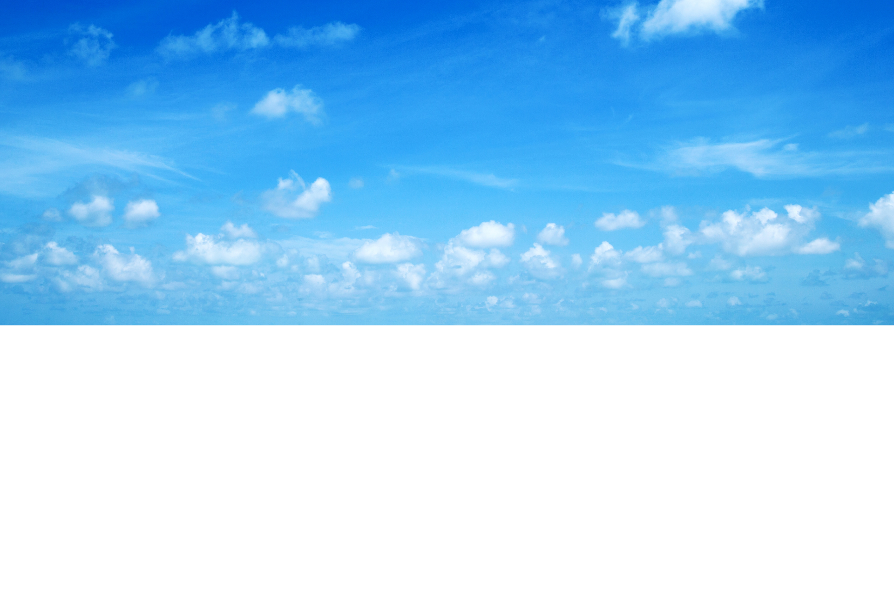
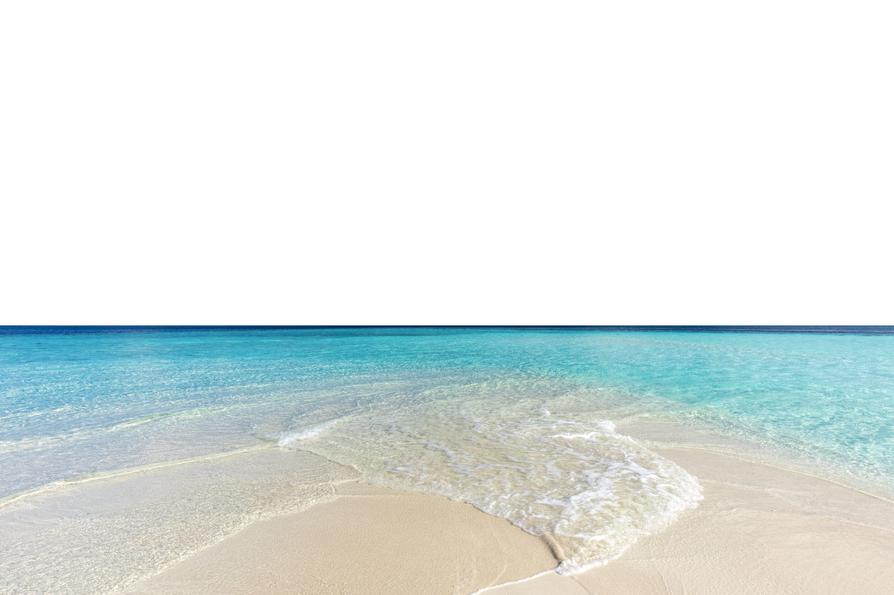
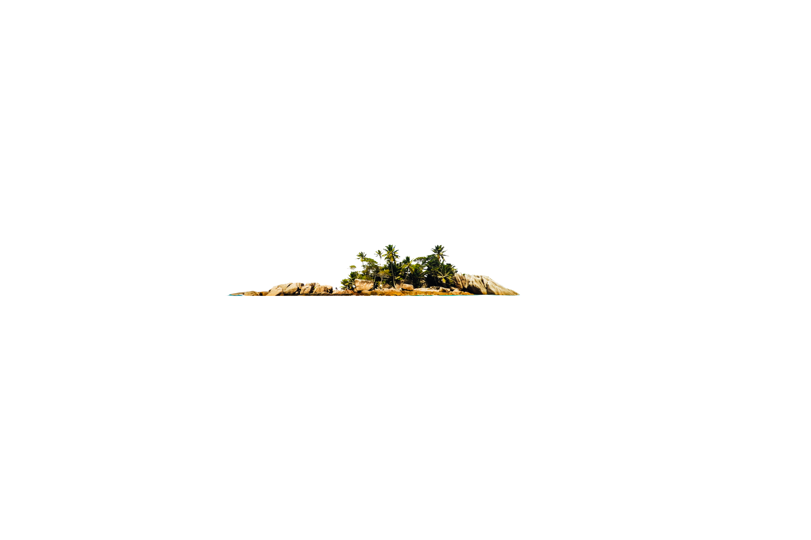
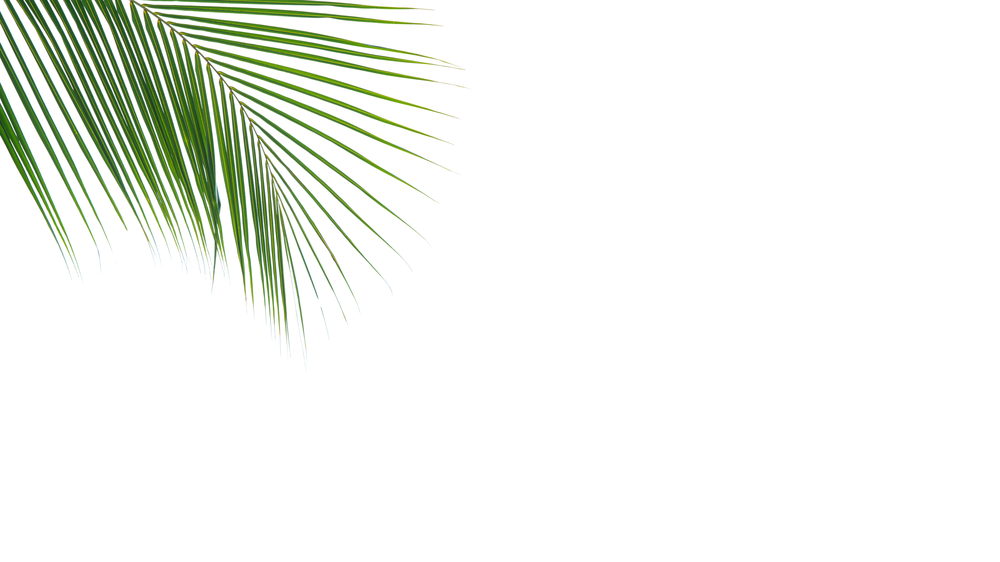
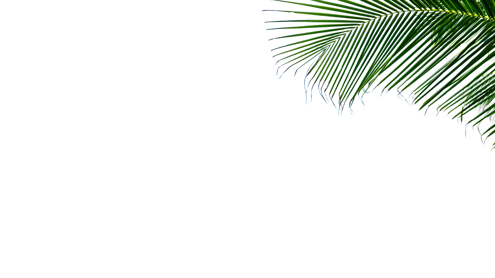






A holiday in Seychelles is like stepping into paradise,
where the pristine beauty of nature captivates your senses at every turn.
The islands are renowned for their powdery white-sand beaches framed by lush,
green jungles and striking granite boulders. The crystal-clear turquoise waters
invite visitors to swim, snorkel, and dive among vibrant coral reefs teeming
with marine life. Beyond its beaches, Seychelles offers unique adventures,
from hiking through tropical rainforests to spotting rare species like the
giant Aldabra tortoises. The laid-back island culture, warm hospitality,
and luxurious resorts create a perfect blend of relaxation and adventure,
making Seychelles an unforgettable tropical escape.
In addition to its stunning natural beauty, Seychelles is a haven for eco-tourism,
offering travelers a chance to explore the islands' rich biodiversity.
Nature reserves like Vallée de Mai, a UNESCO World Heritage Site, are home to
the rare Coco de Mer palm and a variety of endemic species. Hiking trails wind
through dense forests, leading to hidden waterfalls and panoramic viewpoints
overlooking the Indian Ocean. Birdwatchers will delight in spotting rare species
such as the Seychelles black parrot and the Seychelles warbler. The islands’
commitment to conservation makes it a perfect destination for those who appreciate
the serenity of untouched environments and want to experience nature in its purest form.
Beyond its landscapes, Seychelles offers a rich cultural experience rooted in a blend of African,
European, and Asian influences. Visitors can enjoy Creole cuisine, a fusion of flavors that
combines fresh seafood, tropical fruits, and aromatic spices. Exploring local markets and
traditional villages provides insight into the laid-back island lifestyle, while Seychellois
music and dance add to the vibrant atmosphere. Whether it's a romantic getaway, a family adventure,
or a solo escape, Seychelles caters to all types of travelers, offering luxury, tranquility,
and an intimate connection with nature. It’s a place where time seems to slow down, allowing
you to fully immerse yourself in the beauty and magic of island life.
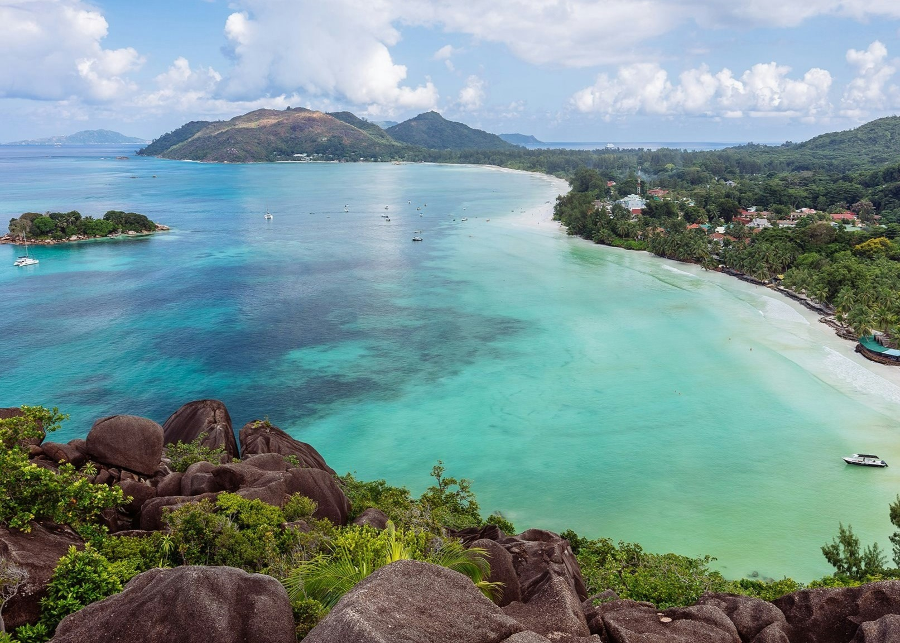

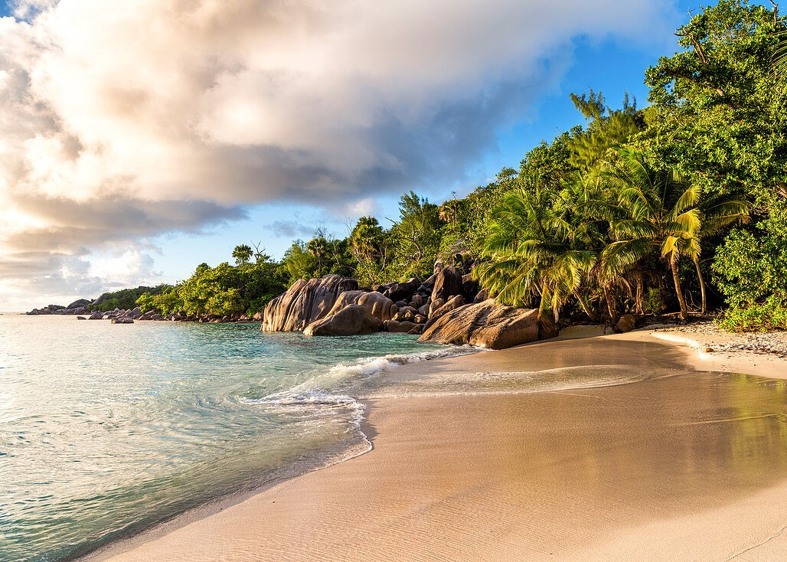

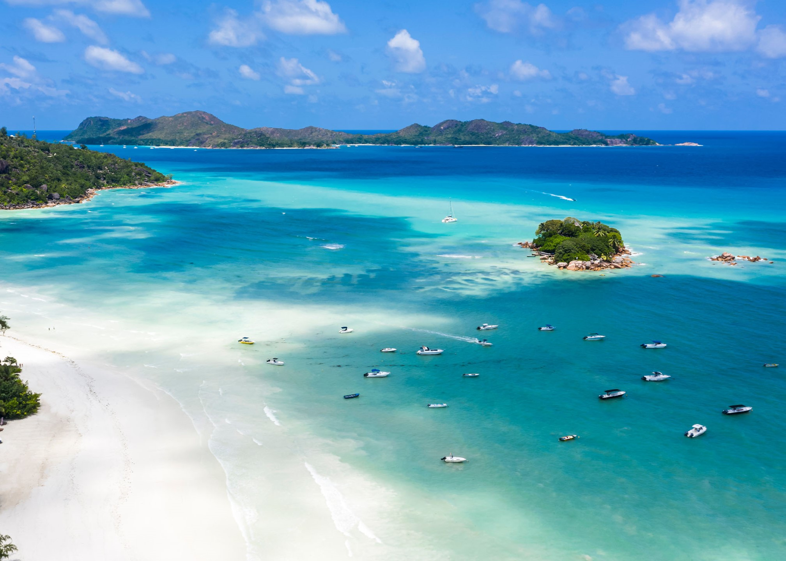
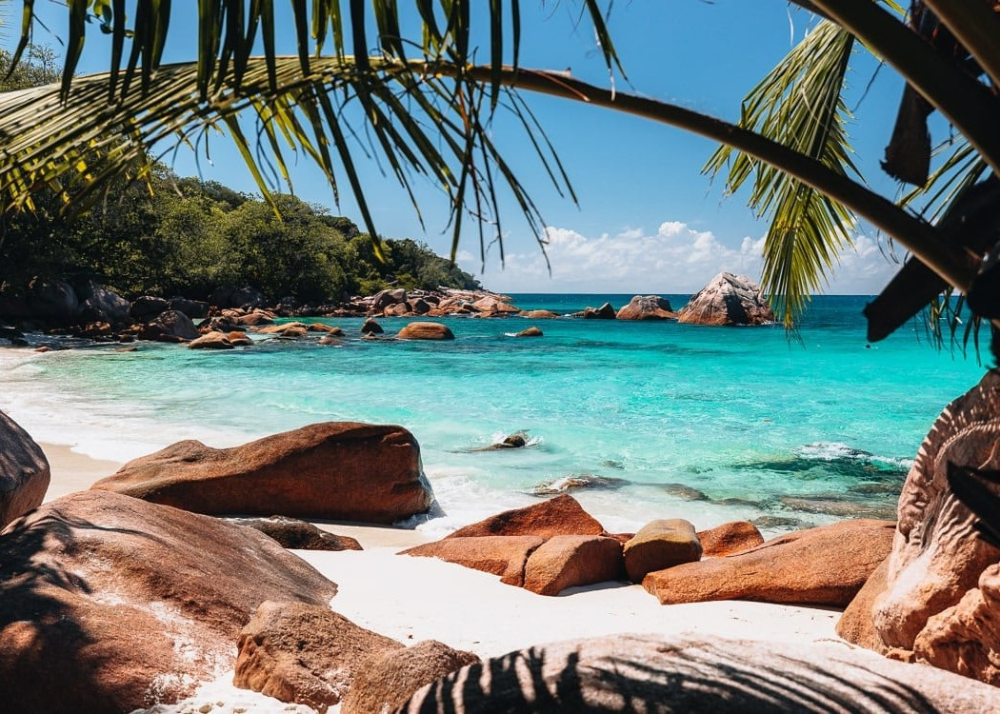
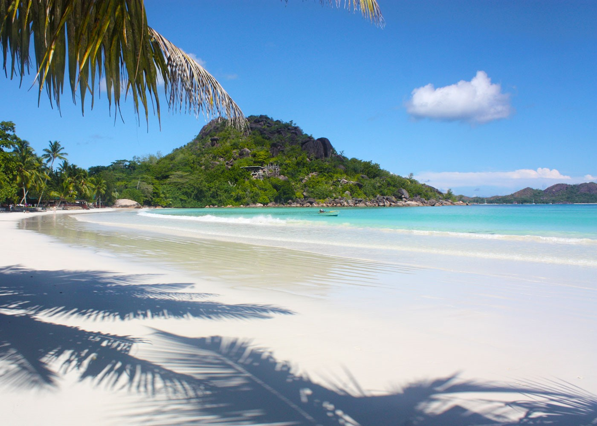
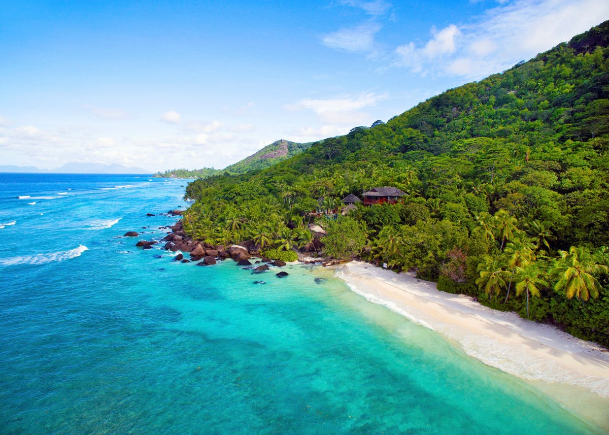